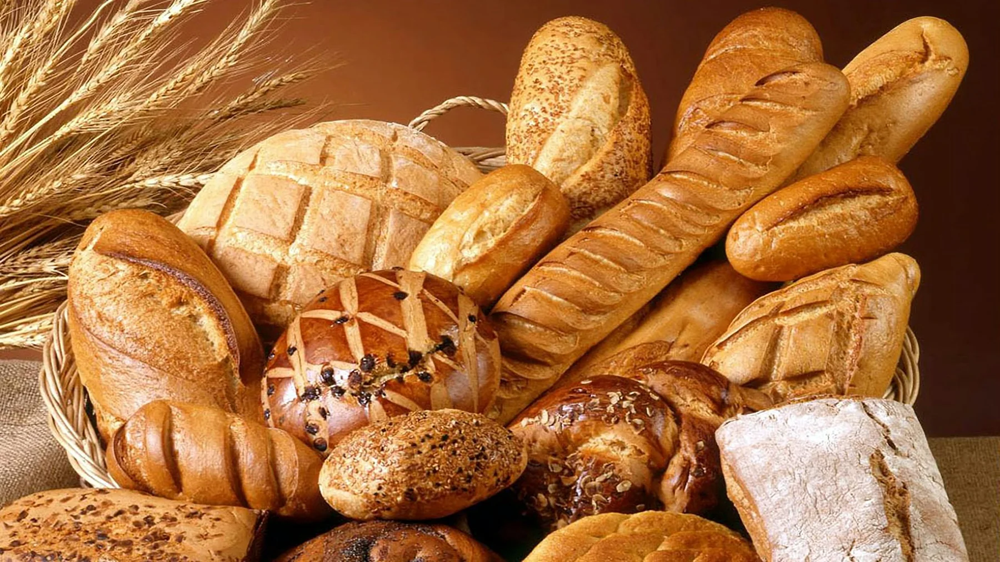
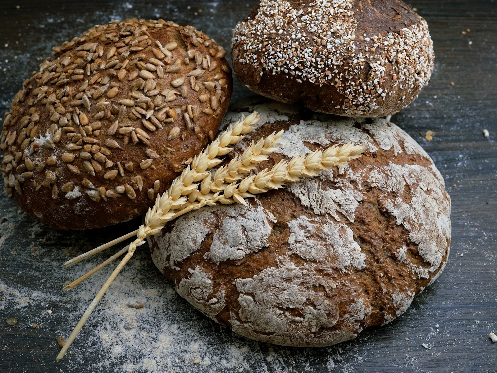

Bread
Country Sourdough
Naturally leavened · crisp crust · open crumb
8.50
Bread
Eight loaves covering daily staples, seeded breads and rotating options.

Bread
Naturally leavened · crisp crust · open crumb

Bread
Rye flour · toasted seeds · deep fermentation
Bread
Thin crust · airy interior · baked throughout the morning
Bread
Country dough · green olives · herbs
Bread
Olive oil · rosemary · flaky salt
Bread
Soft pullman loaf · lightly enriched
Bread
Whole wheat · seeds · long fermentation
Bread
Toasted walnuts · raisins · sourdough base
GOOD TO KNOW
Use the preorder flow when a specific item or quantity matters. Final pickup rules and availability should be verified before production.
Pre-order